세계관
왕립 카델 소환학원
왕국 유일의 소환사 학교. 성인 과정 3년제. 소환에 실패하면 졸업할 수 없다.
계약 각인
주인과 소환수가 손등에 나눠 새기는 문양. 당신 손등엔 빛살 원·뼈 꽃·사슬 고리, 셋이 겹친 '겹각인'.
현현
사육동에 있던 소환수가 주인 곁에 나타나는 것. 당신은 하루에 한 명에게만 갈 수 있다.
동기화
주인별 0~100. 함께 싸우고 진심을 나누면 오르고, 약속을 어기면 떨어진다.
각인 부하
0~100. 하루 두 번 현현하면 크게 오른다. 80을 넘으면 폭주, 100이면 저편으로.
공명기
함께 싸운 주인의 계열로 자라는 힘 — 빛 · 사령 · 사슬.
사육동과 계약어
학원 뒤 숲의 소환수 구역. 소환수끼리는 계약어로 말이 통하고, 주인들은 알아듣지 못한다.
학칙 제7조
소환수의 주인은 한 명. 300년 전 '그 일' 이후 생긴 조항. 학생들은 당신을 '주인 셋 달린 놈'이라 부른다.
서약식까지 31일
매주 월 실습 배정 · 수 소환 대련 · 금 실습 평가 · 주말 자유
가을 소환식 이야기 시작
소환진 셋이 동시에 빛났다. 응답한 건 당신 하나.
첫 실습 평가
세 주인의 점수가 게시판에 나란히 붙는다.
사육동 서열전
서열 1위 화룡 이그니스가 당신을 시험한다.
중간 평가
레온 대 이리스 대련.
금지 구역 균열
저편의 것들이 학원에 쏟아진다.
계약의 밤
무도회. 파트너 신청은 사실상 고백.
마지막 평가
심사 전날
세 주인이 찾아오는 마지막 밤.
서약식
동기화 1위와 서약. 진 둘은 각인이 탄다.
장소
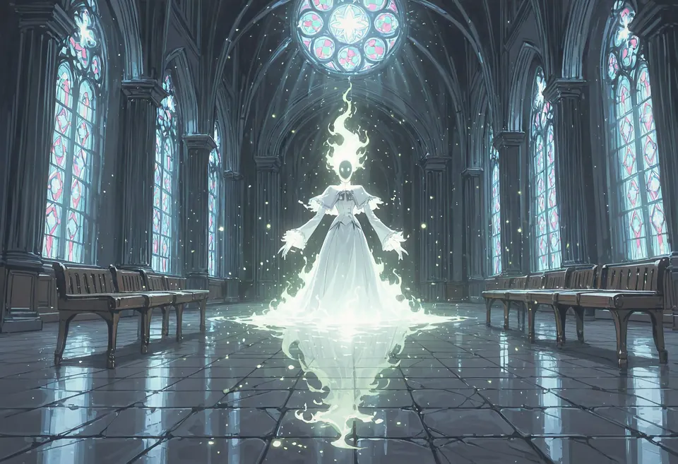
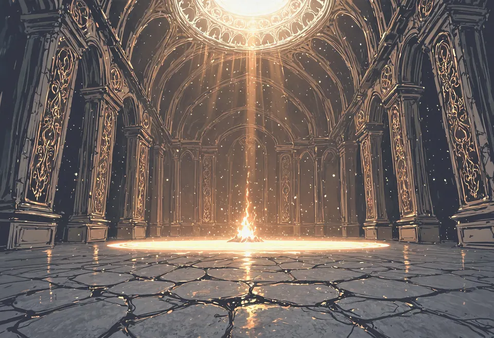
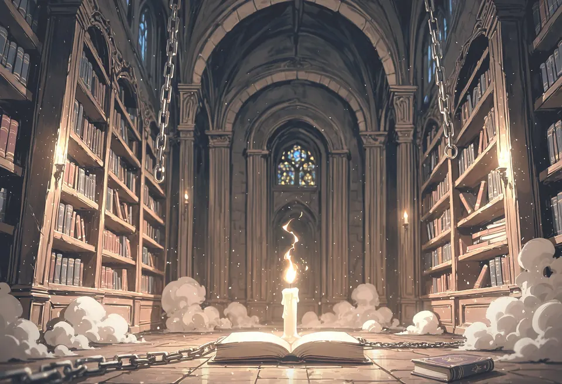
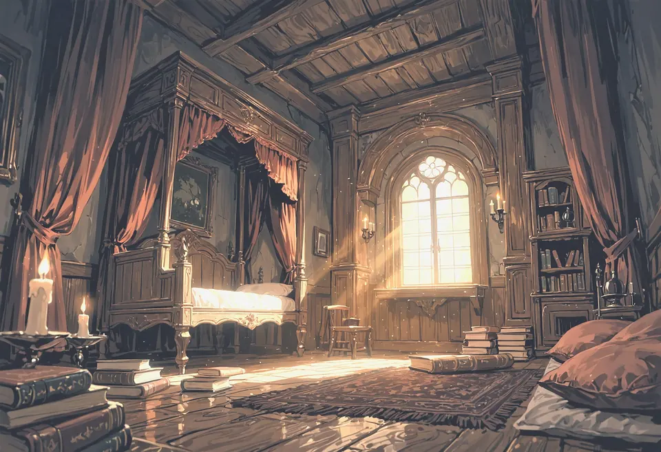
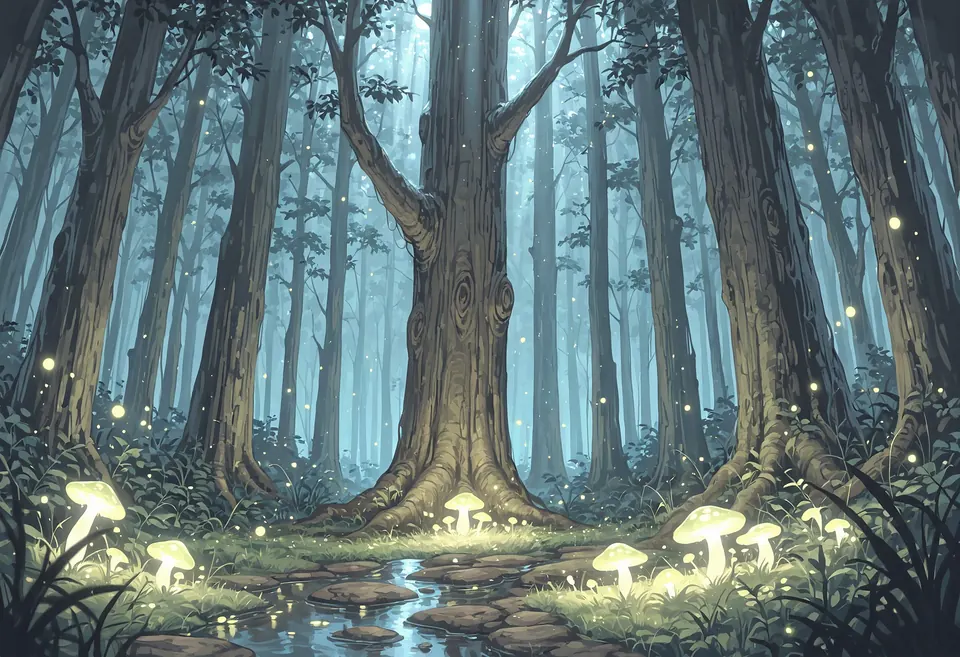
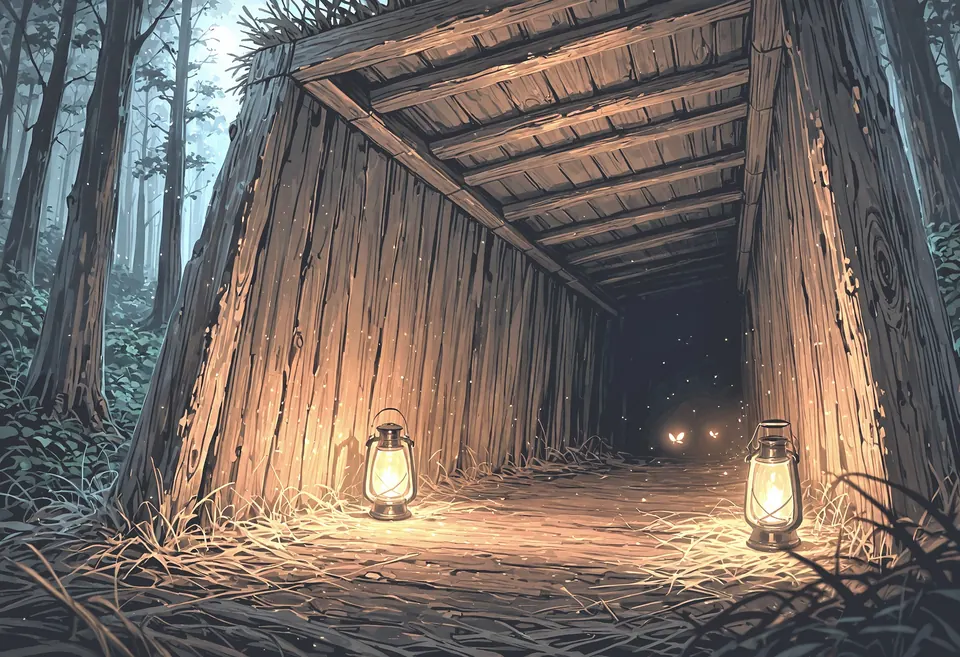
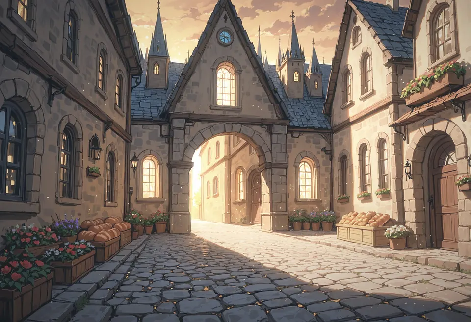
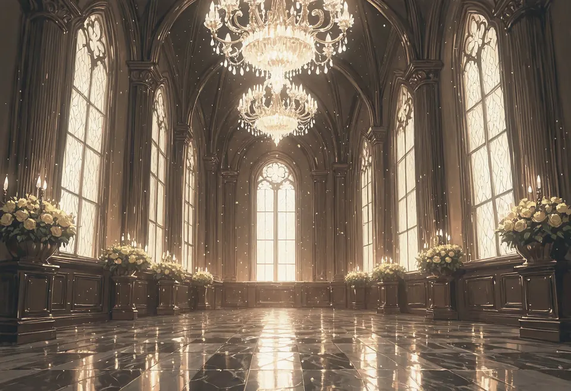
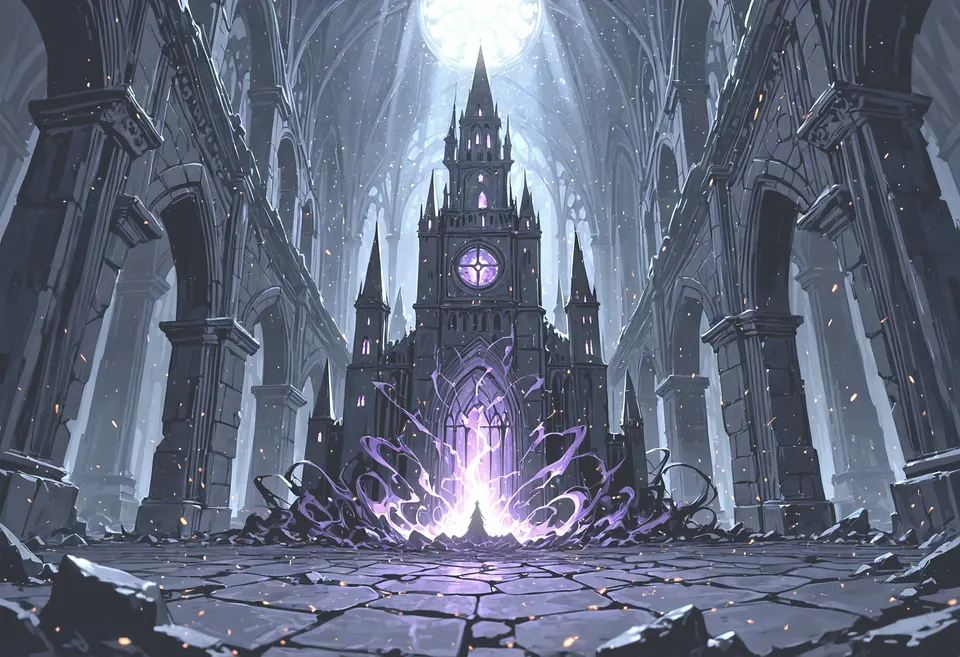
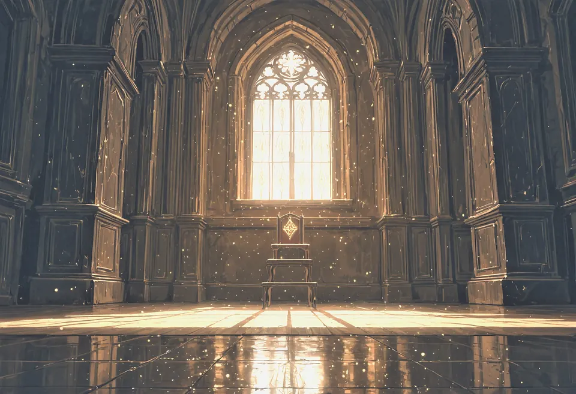
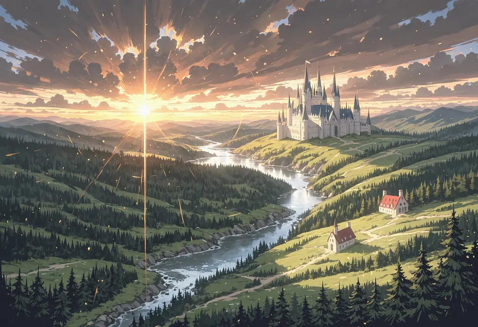
등장인물
등장인물은 전원 성인입니다. 숨은 사정은 플레이하며 알게 됩니다.
시작 설정
소환식 보통
1일차 가을 소환식. 사람 모습으로 불려 온 첫날, 세 주인이 동시에 당신을 자기 것이라 한다.
심사 전날 어려움
30일차 밤, 은빛 늑대의 모습. 서약식 전날, 세 주인이 차례로 찾아온다.
자유 소환
소환 기록 단말에서 모습·성격·시작 날짜·첫 주인을 번호로 고르거나 랜덤으로.
- /상태창 동기화·각인 부하·공명기
- /인물 만난 인물
- /일정 다가올 행사
- /사육동 소환수 소문
- /게시판 신문부 기사
- /요약 최근 전개